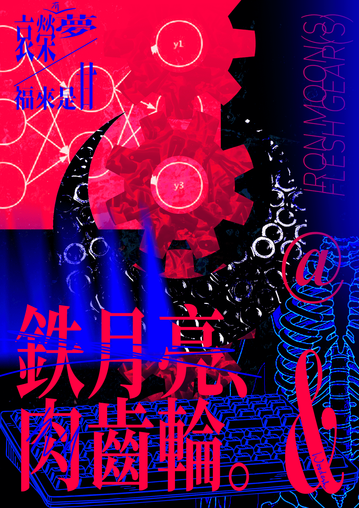

半燃
其六
便携式随机数发生器
索引
从这篇周报开始，我决定加上一个索引了，如果有需要的话请用吧！
生活
应该说明一下的，这个栏目虽然叫做生活，但是我不是把所有事情都记录下来了。其实这个栏目更像是“文化生活”，我在这里分享的都是作品和作品的体验，虽然这段话几周前就该说的。
周一的时候玩了《超阈限空间》，一款视角解密游戏。流程很短，大概两个小时就可以通关，我觉得这个长度应该刚刚好，解密游戏再做长了我就顶不住了（实际上后面已经有点开始头疼）。这个游戏的核心就是“反直觉”，各种视错觉和超现实的机制，让玩家积累的经验全部无效了。按下按键的时候，你不知道会发生什么；远处的物体，不一定是真的；你甚至不知道自己脚下的地面是否坚实，会不会突然地坠落下去。这个游戏给了我太多惊喜，随着玩的游戏的增加，以及对游戏设计理论的了解，我逐渐能在看到画面的第一眼就猜想机制、发现伏笔、思考埋伏。但玩这个游戏的时候，我又变得一无所知了，就像第一次玩游戏的时候。这无疑是一次宝贵的体验，我屡屡惊叹于游戏的设计，最后一场的演出更是好到让人瞠目结舌。这是我游戏生涯中体验最棒的两个小时，打完之后还意犹未尽，对着制作名单发呆。（如果有兴趣的话请一定去试试！
然后和 Pop 玩了好几天的《地痞街区》，一款 roguelike 的俯视角射击游戏。这个游戏我在好几年前的 alpha 测试阶段就试过了，确实好玩。这次玩的时候发现多了好多内容，而且明年好像要出续作了。这个玩起来还是挺爽快的，而且很上瘾，各种像素血块乱飙，主打一个暴力。职业和技能也很丰富，完成任务的方式非常自由，贿赂、潜行、骇入，或者大杀四方——全凭你的喜好，总的来说还是一款不错的肉鸽游戏，不过也有肉鸽游戏最大的缺点，就是不那么耐玩。这几天高强度游玩下来感觉已经有点没意思了，不过可能多找几个人会有更多的乐趣。
我这周还在玩《圣书物语》，一个打字游戏，但是同时还要躲弹幕。听上去就很抽象吧，这绝对是我玩过的最抽象的那一类游戏。游戏中你要扮演一个驱魔人，通过念圣经（还是别的经典，我不太知道）的方式来净化恶魔。所以就要玩家一个一个字母地敲出经书上的单词（是的还没有汉化），同时躲避敌人的攻击。整个玩起来就很精神分裂，不过我在玩游戏的过程中发现我的打字其实非常的烂，指法不标准，而且记不清楚键的位置。游戏的难度其实还是不低的，每一关我基本要重打好几次才能过，不过也正好练练打字技能，而且还能锻炼一下英语阅读的能力（虽然学的都是什么宗教词汇和脏话，感觉帮助没有多少）。
周四的时候我去看了演出（票价非常便宜），为此我还熬夜赶完了好几天的作业。有一个乐队出现了一点事故，不过好在剩下的两个都还不错。LTN 乐队给人的感觉非常亲切，尽管他们多番地说：“我们不是脱口秀演员”，但表演还是让人非常快乐的。最让我惊喜的无疑是鲜克的演出。下面我就直接搬运当日写的感受吧，第一手资料的体验始终是最真实的（而且我也懒得再写了）
当上一个乐队的演出结束后，鲜克的主唱（之一）拿着一把 PRS 走上台，我对虾老师和芙老师说，感觉有高手。
这把美国来的、絮状贴面的墨绿 PRS Custom 不会想到，它有一天，能成为一块玉。鲜克是今晚给我们惊喜最大的乐队，从第一个和弦的氛围开始，在主唱换用戏腔时达到高峰。扎实的鼓点（后来他们说这是核队的鼓手），厚重的音墙，与民族风格浓郁的旋律与词与唱腔，不得不让我折服，为之震颤。
这场演出的门票，算上学生优惠，我们一人只花了 22 元，这是他们的第二场演出，我想之后可能再也没有这么便宜的票了。
文章
卡片设计的终极指南（译）
这篇文章介绍了卡片如何设计。其实是这些日子我在做课程项目的时候大量用到了卡片型的部件，其中有些建议还是很有用的，比如说不要用分割线。我一开始的方案用了很多分割线，但是看起来效果并不好，读完这篇文章之后我全都去掉了，看起来确实更清爽。课堂上老师提到，尽量让整张卡片都是可点击的，而不是只有小小的链接才能交互。这个确实很有用，我在创作里就用了这种方式。一开始确实只有标题可以点击，但是我在试验的时候发现，可操作区域太小其实很影响用户体验，就干脆把整张卡片做成可点击的样式了。这算什么，偶然发现？不过也挺好的，凭自己的能力发现了一些经验性的东西，感觉还是挺有成就感的。
译文：作为设计师，无限滚动的 FEED 流是否应受到限制？
这篇文章介绍了无限 FEED 流的各种方面，设计上、工程上、和道德上。文中提到这样一句话：
从无限滚动中得到的一个教训是：极致的易用并不意味着对用户或人性最为有益。
看到这句话，我们会想起许多产品吧？这个教训弥足珍贵，对于每一个创造美好体验的设计师（我正在努力成为）来说，都值得铭记。
OKLCH 色彩空间是搭建色彩系统的最佳选择
这篇文章介绍了 OKLCH 色彩空间。谈起色彩空间，我们第一印象可能是 RGB，但 RGB 是为机器而设计的，人类不能直观地感受颜色；于是我们现在更多地使用 HSL 和 HSB，色相纯度亮度的概念更加直观，而且深入人心。但仍然有一些问题，比如同纯同亮的黄色与蓝色，黄色看上去要明显更亮。这往往让我调色的时候很苦恼，我只想换个颜色，而不想重新调整明暗。就没有一个更现代的方式了吗？
OKLCH 看上去非常吸引人，简单地说，它通过视觉科学的方式，修正了这些问题。颜色变得连续而均一，而且对设计更加友好。虽然我设计和技术都是半桶水，但我也能明显感知到设计有些时候还是古法炼丹，你说这是传承也可以，但我只感觉到低效而且陈旧。这是我想看到的改变，设计需要更多的技术介入，说实话的，这个时代，一切都要。
实践任务管理系统中的「上下文」
这篇文章介绍了如何根据不同场景让 TODO 软件更好用。说实话的，我觉得这个想法非常好，而且非常智能，降低了用户的操作复杂度。未来的智能助理，可能干的其实就和这种事情差不多（当然肯定会更复杂）。
本想在实验室看云，最后却改写了历史
这篇文章介绍了威尔逊如何发明了云室。很美的文章，很美好，很伟大。
失业一年后，我现在怎么样了
这篇文章介绍了作者失业后的生活。尽管作为一个学生，我还没被社会毒打过，什么都不知道。但我会赞美作者笔下的生活，跳脱出游戏规则，自尊自立。我不想做齿轮，如果可以，我不会去做齿轮。
创作
本周做了一张海报。其实这周一直在做设计，部门的、课程的，但是做这些东西做久了总是感觉太受约束，于是就应该做些自己的项目了。如此的，我照样把发布时的原文贴在下方，那是我熬夜到早上六点写下的，伤悲而疲乏，但依然有能量。
铁月亮、 肉齿轮。
“我咽下一枚铁做的月亮，他们把它叫做螺丝。”许立志在 2013 年写下这首诗，次年，从楼顶跳下，终年 24 岁。他比 25 的海子少活了一年，却也比 25 的海子多打了许多年工。许立志是一个工人诗人，白天打工，夜里作诗——可工厂先逼死了工人，再逼死了诗人。
诗歌不只有浪漫主义。三吏三别离我们太远，打工诗人们的诗歌却离我们太近。现在，到处都是铁做的月亮，我们都是肉的齿轮。从三和人才市场，到 996.icu ；从建筑工地上打灰的工人，到为 ai 提供训练养料的数据标注员，我们命运相连。
做这幅海报的时候，我不甘心做的平淡如水，人畜无害，那样我对不起他和他的诗。可这是我现在能做出最好的作品了，再无一点余力，心里有愧，也只好告一段落。我一直想试试极繁主义之类的东西，pinterest 上有设计师称作 Anti-design，反设计。我尤其记得构成课时，老师对我说的话：你的风格很简约，可能是你接触的作品的影响，也可能是你没有处理复杂元素的能力。而我真真的，是后者。我只会做不用动脑的极简主义，我不是说极简主义不好，而是我做的时候不会动脑。
于是面对着这样一个题材，我试了试一些极端的、有些过载的风格。我知道，这看上去并不那么温和，但这是一个严肃而且残酷的主题，几何主义什么也反映不了。视觉传达究竟要传递什么？形式服从功能的话，为什么到处都是一模一样的极简风格？这应该是出问题了。
先锋的独立的设计都很好，但我们也要关注眼前的主题。设计始终不是艺术（尽管设计可以具备艺术性），更不是文艺青年与小资产阶级的玩物。我是人民群众，而设计始终为了人民服务、为群众发声。尽管我目前还做不到这么纯粹，但我会继续做的。
当我们输入文字时我们在想什么
我在玩《圣书物语》的时候，发现一个事实：我的英文输入效率比中文要慢得多。仔细思考后，我觉得是我对英文的熟悉程度不够造成的，打中文的时候，我能快速地反应出我要输入什么键；但面对游戏中生僻的词汇，我要努力地去辨认，然后记在脑中，再打出来。当然另一方面我也对英文中的字母组合不太熟悉，比如“power”这个词让我死了许多次，我总是来不及打出来。
于是，我们输入文字的时候究竟在想什么？要输入一段文字，我们首先要在脑中“念出”它们，然后再去寻找对应的键位。而我的英文并不那么“自然”，尽管我能看懂听懂，也能表达一些简单的英文，但我不像英语母语者那样用英文思考。英文对我来说更像是离散的字母组合，只不过有些组合更加整体一些罢了。就比如我要打出“print”来，我会有意识地想，我要先打 p，再打 r，接着是 i，然后是 n 和 t，我的水平还不足以把英文看成一个整体来看待。
而作为一个用中文思考的人，我对中文的熟悉程度显然更高，我知道一个字怎么读，马上就能知道它怎么打出来，即使我用的是双拼输入法，需要再进行一层转换（双拼是一种把字拆成声母和韵母，再用一个字母来表示各个声母韵母的输入法，比如说“半燃”这个词，在全拼下是“ban ran”，在双拼下就要打“bj rj”）。哪怕是我要经历一次映射，我也能很流畅地输入中文，而不用考虑别的什么。当然，这可能不仅仅和母语有关，还可能和语言间的差异有一定的关系，比如中文的每个字都是单音节的，而英文不是，当然这就是专业的语言知识了，我是一窍不通。仔细想来还是挺有趣的一个话题，等我有对应的知识了说不定会去研究一下。
随机数：占卜与决策
我不久前买了一个 D20 戒指，简单来说就是一个随机数产生器，我这几天经常用它来帮我决策，比如说数值大于二十就玩一会再做作业什么的，可以说很好的解决了我的选择困难症。如果怎么选择都无所谓的话，不如让随机数来决定吧。
实际上按照 D20 原本的用法，这个戒指也可以用来做一些占卜之类的用途。把现实看成一次跑团，比如说我现在要去上课，投一个敏捷骰，如果出目大于 15，我慢慢走就不会迟到。当然，这个完全没有任何道理，投出的结果和现实没有相关性，更没有因果性，单纯是为了好玩。因为我迟到了也无所谓的（厚颜无耻嘛这不是）。
这样看来，用复杂的方式占卜还不如这个方便，只要建立了一套数字的映射就行，我印象里算卦好像就是三个铜钱产生的随机数。作为一个唯物主义战士，我向来是不相信各种占卜的，塔罗星座梅花易数，额，接下来我要提及一款卡尔荣格上世纪的性格测试。好吧其实都差不多，我确实不喜欢玄学。仅仅是为了好玩的话，这些占卜也太死板而僵化了。
我有一个更有趣的占卜方式，比如你随便抽出一本书，然后随便翻开一页，默念自己的问题，闭眼指出一句话，这就是你得到的解了。我现在试一下，把我的操作过程写下来。比如说我的问题是“我能在十二点前写完周报吗”，然后去拿一本书。好拿到的是加缪的《局外人》，然后随便翻开一页，指出一句话，我得到的结果是“可以说，人们好像是在把我完全撇开的情况下处理这桩案子”。然后我们就可以开始解释卜辞了：这句话表达了我的行动是可有可无的，影响不大；那么对应的就是我只能顺其自然，继续写就能写完。
可以看到这种解卜方式完全就是瞎扯，可问题是别的占卜也差不多，只不过规则更复杂，卜辞更严肃，让你以为不是在瞎扯。所以既然都是瞎扯，我宁愿用我更喜欢的方式，让我喜欢的作品参与进来。具体我到时候有没有写完其实也无所谓，因为占卜只是占卜，就算我真写完了也不是占卜的功劳。不过我会在最后说的。
回车与换行
发布那个海报的时候，我遇到了一个问题：我在 iOS 上编辑的分段的文字，在安卓的微信上看起来连成了一片，中间还夹杂了几个问号字符。我把这些字符复制到了 VSC，发现这是 U+2029，叫做段分隔符，而安卓端的微信好像无法渲染（虽然明明 iOS 和 Windows 上都可以，可能实现方式不一样）。于是我打算研究一下这个符号有什么用。
我在 这篇文章 里学到了，原来 U+2029 实际上是纯文本中的段落标签，我看到的空白其实是两个段落之间的空隙，而不是一个“空行”，感觉还真是奇怪的设计，而且看上去兼容性也不太好。
我顺带着学了一下回车和换行的知识。在很早的时候，在打字机上想要在下一行打字需要两个步骤，首先是把打印头移动到行首，然后再把纸往上移动一行，这两个步骤分别叫做回车和换行，我们现在按的 Enter 键代表了以前的两个键。而且在不同的操作系统中，尽管看起来都一样，但具体的实现方式也有不同，有的需要回车和换行、有的只用回车、有的只用换行，虽然最后在各自系统上的显示效果是一样的，但是换用不同系统的时候就会出现一些问题。还真是混乱，计算机界有各种复杂的标准不统一，能不能稍微大一统一下呢（
结
这是本周的周报了，我在想要不要少写一点，毕竟废话实在是太多，而且我会不由自主地无病呻吟，编些文字出来，这样不好。下周的时候我要注意一下，少写一些没有用的内容，当然有价值的内容不会少的。这是 2023 年 11 月 27 日至 12 月 3 日、今年第 49 周、学期第十四周的周报。没想到已经十二月了啊，一年马上就要过去了，还是有些虚幻感。顺带一提，我没在十二点前写完周报，实在是对不起，这周有些，忙？可能也不是，但是很累。总之，下周见吧！